Korrektheit
Man unterscheidet zwischen Prüfung der Korrektheit (Verifikation) und Prüfung der Spezifikation (Validierung). Ein Algorithmus heißt korrekt, wenn er sich gemäß seiner Spezifikation verhält, auch wenn seine Spezifikation nicht immer die gewünschten Ergebnisse liefert. Die Spezifikation beschreibt die Vorbedingungen (was vor der Anwendung des Algorithmus gilt, so dass der Algorithmus überhaupt angewendet werden darf) und die Nachbedingungen (was nach der Anwendung des Algorithmus gilt, welchen Zustand des Systems der Algorithmus also erzeugt). Hier geht es ausschliesslich um die Prüfung der Korrektheit eines Algorithmus, also darum, ob die spezifizierten Nachbedingungen wirklich gelten.
Nebenbemerkungen
- Approximationsalgorithmen liefern nie ein exaktes Ergebnis. Sie gelten als korrekt, wenn der in der Spezifikation angegebene Approximationsfehler nicht überschritten wird.
- Es gibt Algorithmen, die nie mit einer 100-prozentigen Wahrscheinlichkeit richtige Ergebnisse liefern können (z.B. nichtdeterministische Primzahltests). In diesem Fall muss die in der Spezifikation angegebene Erfolgswahrscheinlichleit erreicht werden.
- Korrektheit wird in Algorithmenbüchern meist nur im Zusammenhang mit konkreten Algorithmen behandelt, aber nicht als übergreifendes Problem. Dies erscheint der Bedeutung von Korrektheit nicht angemessen.
Will man die Korrektheit eines Algorithmus/Programms feststellen, hat man 3 Vorgehensweisen zur Verfügung: Korrektheitsprüfungen durch die Programmiersprache, formaler Korrektheitsbeweis und Softwaretest.
Contents
Korrektheitsprüfungen durch die Programmiersprache
Alle Programmiersprachen beinhalten gewisse Hilfen, um Programmierfehler zu vermeiden, insbesondere die syntaktische Prüfung und die Typprüfung. Zwar kann man dadurch nur relativ einfache Fehler finden (siehe Beispiele unten), aber da diese Prüfungen ohne zusätzlichen Aufwand automatisch passieren, sind sie trotzdem sehr nützlich. Die hier kurz beschriebenen Konzepte werden in den Veranstaltungen zur theoretischen Informatik (Grammatiken) und zum Compilerbau ausführlich behandelt.
Syntaktische Prüfung
Es wird eine Grammatik definiert, deren Regeln die Implementation des Algorithmus befolgen muss. Für ein Programm heißt das beispielsweise, dass die Syntax der Programmiersprache eingehalten werden muss.
Vorteile des Verfahrens: die Richtigkeit der Syntax lässt sich leicht vom Compiler/Interpreter überprüfen (mehr dazu in der Theoretischen Informatik und Compilerbau). Somit ist es die einfachste Möglichkeit, viele inkorrekte Programme schnell zu erkennen und zurückzuweisen.
>>> if a = 0: # sollte heissen: if a == 0:
File "<stdin>", line 1
if a = 0:
^
SyntaxError: invalid syntax
Typprüfung
Ein Typ definiert Gruppierung der Daten und die Operationen, die für diese Datengruppierung erlaubt sind (konkreter Typ) bzw. die Bedeutung der Daten und die erlaubten Operationen (abstrakter Datentyp, vgl. Dreieck aus der ersten Vorlesung). Typen sind Zusicherungen an den Algorithmus und den Compiler/Interpreter, dass Daten und deren Operationen bestimmte semantische Bedingungen einhalten. Wenn man innerhalb des Algorithmus mit Typen arbeitet, darf man von der semantischen Korrektheit der erlaubten Operationen ausgehen. Umgekehrt können Operationen, die zu Typkonflikten führen würden, leicht als inkorrekt zurückgewiesen werden.
Vorteile des Verfahrens: Typprüfung ist teuerer als syntaktische Prüfung, aber billiger als andere Prüfungen der Korrektheit (mehr dazu im Kapitel Generizität).
>>> a=3 >>> b=None >>> a+b Traceback (most recent call last): File "<stdin>", line 1, in <module> TypeError: unsupported operand type(s) for +: 'int' and 'NoneType'
In python ist (ebenso wie in vielen anderen Programmiersprachen) explizite Typprüfung möglich:
>>> import types >>> a=3 >>> b=None >>> if isinstance(b, types.IntType): # prüft, ob b ein Integer ist ... print a+b ... else: ... raise TypeError, "b ist kein Integer" # falls b kein Integer ist, wird ein TypeError ausgelöst ... Traceback (most recent call last): File "<stdin>", line 4, in <module> TypeError: b ist kein Integer
Prüfen der Vorbedingungen eines Algorithmus
Manche Programmiersprachen (z.B. Eiffel) testen am Anfang jeder Funktion automatisch alle spezifizierten Vorbedingungen. Dies wird als Programming by Contract bezeichnet. In Python hingegen muss man solche Prüfungen, mit Ausnahme der Typprüfungen (die man als Spezialfall der Vorbedingungen betrachten kann), selbst implementieren. Es steht aber mit den Exceptions ein leistungsfähiger Mechanismus zur Verfügung, um eventuelle Fehler in geordneter Weise zu signalisieren, siehe dazu Kapitel 8 (Errors and Exceptions) der Pythondokumentation. Beispielsweise darf die Quadratwurzel nicht für negative Zahlen aufgerufen werden. Man schreibt deshalb:
def sqrt(x):
if x < 0.0:
raise ValueError("sqrt() of negative number.")
Qualitativ hochwertige Software zeichnet sich unter anderem dadurch aus, dass das Programming by Contract konsequent umgesetzt ist, auch wenn die Programmiersprache dafür keine dedizierten Sprachkonstrukte bereitstellt.
Formaler Korrektheitsbeweis
Korrektheitsbeweise können auf drei Arten geführt werden:
- In Algorithmenbüchern findet man typischerweise Beweise für die Korrektheit der grundlegenden Idee eines Algorithmus. Diese Beweise werden auf der Pseudocodeebene geführt, so dass bei der Implementation wieder Fehler unterlaufen können.
- Ein formaler Beweis der Korrektheit einer konkreten Implementation erfordert weit größeren Aufwand, sichert aber, dass der Code keine Fehler mehr enthalten kann.
- Werden im Algorithmus reelle Zahlen mit Hilfe von Gleitkommazahlen implementiert, ist der Algorithmus automatisch ein Approximationsalgorithmus, weil die Gleitkommazahlen nur eine Approximation der reellen Zahlen sind. In diesem Falle beweist man, dass der Approximationsfehler bestimmte Schranken nicht überschreitet. Dies ist eine wichtige Aufgabe der Numerischen Mathematik und wird hier nicht weiter vertieft.
Korrektheitsbeweis der Algorithmenidee
Hier ist die entscheidende Technik die Identifikation von Invarianten, die (dank der Vorbedingungen) am Anfang und während der gesamten Ausführung des Algorithmus gelten. Kann man die Erhaltung der Invarianten nachweisen, folgen daraus die Nachbedingungen des Algorithmus und somit dessen Korrektheit. Die Identifikation geeigneter Invarianten ist häufig eine schwierige Aufgabe. Hat man einen Kandidaten gefunden, geht man zum Beweis ähnlich vor wie beim mathematischen Verfahren der vollständigen Induktion: Man beweist zunächst, dass die Invariante am Anfang gilt (initialization). Dann nimmt man an, dass die Invariante vor einem bestimmten Statement (z.B. vor der i-ten Iteration einer Schleife) gilt, und beweist, dass daraus die Gültigkeit am Ende des Statement (also nach der i-ten Iteration) folgt (maintainance). Kann man außerdem zeigen, dass der Algorithmus terminiert, folgt aus initialization und maintainance die Gültigkeit der Invariante am Ende des Algorithmus.
Wir wollen das Verfahren am Beispiel des Selection Sort-Algorithmus vorführen. Um den Beweis zu vereinfachen, definieren wir die folgenden Konventionen:
- Ein leeres Array [] ist sortiert.
- Das Minimum eines leeren Arrays ist
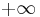
, und das Maximum ist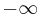
.
Der selection sort-Algorithmus hat zwei Invarianten:
- I1: Vor der i-ten Iteration der äußeren Schleife ist das linke Teilarray a[:i] sortiert.
- I2: Vor der i-ten Iteration der äußeren Schleife ist das Maximum des linken Teilarrays max(a[:i]) kleiner oder gleich dem Minimum des rechten Teilarrays min(a[i:]).
Der Beweis der Initialisierung (Fall i==0) ist sehr einfach, weil das linke Teilarray zunächst leer und somit sortiert ist (I1). Außerdem ist sein Maximum and damit sicherlich kleiner als jedes Element im Array (I2).
Wir nehmen nun an, dass die Invarianten für ein gewisses i gelten und beweisen, dass sie dann auch für i+1 gelten. Das heißt, wir nehmen an, dass a[:i] sortiert ist (I1), und dass max(a[:i]) ≤ min(a[i:]) (I2). Da das Element a[i] zum rechten Teilarray gehört, gilt insbesondere auch max(a[:i]) ≤ a[i], und daraus folgt sofort, dass das um ein Element vergrößerte linke Teilarray a[:i+1] ebenfalls sortiert ist (I1), unabhängig davon, welches Element sich an Position i befindet. Um aber auch die zweite Invariante zu erfüllen, müssen wir zusätzlich sicherstellen, dass a[i] ≤ min(a[i:]) gilt, dass sich also ein minimales Element des rechten Teilarrays an Position i befindet. Entfernt man nämlich das minimale Element aus einer Menge, wird das neue Minimum der verkleinerten Menge sicherlich nicht kleiner sein als das alte. Die innere Schleife sucht nun gerade das Minimum und verschiebt es an Position i. Nach dem Swap gilt somit: max(a[:i]) ≤ a[i] = min(a[i:]) ≤ min(a[i+1:]) und damit auch max(a[:i+1]) = a[i] ≤ min(a[i+1:]) (I2). Außerdem ist klar, dass der Algorithmus terminiert, weil jede Schleife nur endlich viele Schritte ausführt (Iteration bis len(a)). Durch Induktion auf den Fall i == len(a) folgt aus Invariante I1, dass das Teilarray a[:len(a)] sortiert ist. Dies ist aber gerade das gesamte Array, was zu beweisen war.
Zehlreiche Beweise nach diesem Muster findet man z.B. bei Cormen et al.
Formales Beweisen der Implementation
Man versucht, die Hypothese H: die Implementation ist korrekt entweder mathematisch zu beweisen oder zu widerlegen. Dieses Beweisverfahren heißt automatisch, wenn es allein von einem Computer durchgeführt wird, und halbautomatisch, wenn der Mensch in den Entscheidungsprozess miteinbezogen ist. Allerdings sind solche Beweise sehr aufwändig und werden daher nur für sicherheitskritische Software verwendet, z.B. für
- die automatische Steuerung der fahrerlosen U-Bahnlinie 14 in Paris (vgl. Lecomte et al.: Formal Methods in Safety-Critical Railway Systems and Su et al.: From Requirements to Development: Methodology and Example - die Autoren der Steuersoftware versichern, dass in 10 Jahren Betrieb der U-Bahn kein Softwarefehler aufgetreten ist),
- die Sicherheitsmerkmale von Chipkarten und
- das Flugzeugbetriebssystem INTEGRITY 178B, das z.B. im Airbus A380 und in der Boeing 787 eingesetzt wird.
Um den Beweis durchführen zu können, ist folgendes nötig:
- eine formale Spezifikation des Algorithmus
- eine formale Spezifikation wird in einer Spezifikationssprache geschrieben (z.B. der B-Methode oder der Z-Notation). Sie ist
- deklarativ (d.h. beschreibt, was das Programm tun soll, ist selbst aber nicht ausführbar)
- formal präzise (kann nur auf eine einzige Weise interpretiert werden)
- hierarchisch aufgebaut (eine Spezifikation für einen komplizierten Algorithmus greift auf Spezifikationen für einfache Bestandteile dieses Algorithmus zurück)
- so einfach, dass ihre Korrektheit für einen Menschen mit entsprechender Erfahrung unmittelbar einsichtig ist (denn eine Spezifikation kann nicht formal bewiesen werden - dafür wäre eine weitere Spezifikation nötig, die auch bewiesen werden müsste usw.)
- ein axiomatisiertes Programmiermodell
- zum Beispiel
- eine axiomatisierbare Programmiersprache, wie z.B. WHILE-Programm (s. erste Vorlesung), Pascal (siehe dazu Hoare's grundlegenden Artikel) und rein funktionale Programmiersprachen
- ein axiomatisierbares Subset einer Programmiersprache (die meisten Programmiersprachen sind zu komplex, um als Ganzes axiomatisierbar zu sein)
- endliche Automaten
Der Korrektheitsbeweis kann beispielsweise mit dem Hoare-Kalkül (Hoare-Logik) durchgeführt werden (Hoare erfand u.a. den Quicksort-Algorithmus). Diese Methode wurde in
- C.A.R. Hoare: "An Axiomatic Basis for Computer Programming", Communications of the ACM, 1969 [1]
erstmalig beschrieben. Im folgenden wird das Verfahren an einem Beispiel erläutert.
Beispiel-Algorithmus
Zuerst brauchen wir einen Algorithmus, den wir auf Korrektheit prüfen wollen. Wir nehmen als Beispiel die Division x/y durch sukzessives Subtrahieren.
Vorbedingungen:
int x,y
0 < y <= x
Gesucht:
Quotient q, Rest r
Algorithmus:
r = x
q = 0
while y <= r:
r = r - y
q = q + 1
Nachbedingungen:
x == r + y*q and r < y
Aufbau der Hoare-Logik
Grundlegende syntaktische Struktur:
- p {Q} r
mit p:Vorbedingung, Q: Operation, r: Nachbedingung. Es bedeutet also schlicht: wenn man im Zustand p ist und eine Operation Q ausführt, kommt man in den Zustand r. Hat eine Operation keine Vorbedingung, schreibt man
- true {Q} r
Die Hoare-Logik besteht aus 5 Axiomen:
- D0 - Axiom der Zuweisung
- (Rule of Assignment)
- R[t] {x=t} R[x]
- Beispiel: t==5 {x=t} x==5
- Vorbedingung und Nachbedingung sind gleich, mit Ausnahme der Variablen x und t, die in der Zuweisung verknüpft werden: Man erhält die Vorbedingung, wenn man in der Nachbedingung alle Vorkommen von x (bzw. allgemein: alle Vorkommen der linken Variable der Zuweisung) durch t (bzw. allgemein: durch die rechte Variable der Zuweisung) ersetzt.
- D1 - Konsequenzregeln
- (Rules of Consequence, besteht aus zwei Axiomen)
- D1(a): wenn gilt
- P {Q} R und R ⇒ S
- dann gilt auch
- P {Q} S
- D1(b): wenn gilt
- P {Q} R und S ⇒ P
- dann gilt auch
- S {Q} R
- Beispiel: Für jede ganze Zahl gilt (x>5) ⇒ (x>0). Gilt außerdem (x>5) dann gilt erst recht (x>0).
- D2 - Sequenzregel
- (Rule of Composition)
- wenn gilt
- P {Q1} R1 und R1 {Q2} R
- dann gilt auch
- P {Q1, Q2} R
- Das heißt: wenn man P hat und Q1 darauf anwendet, kommt man zu R1. Wenn man R1 hat und Q2 darauf anwendet, kommt man zu R. Deshalb kann man das so verkürzen: wenn man P hat und nacheinander Q1 und Q2 darauf anwendet, kommt man zu R.
- D3 - Iterationsregel
- (Rule of Iteration)
- wenn gilt
- (P ∧ B) {S} P
- dann gilt auch
- P { while B do S } (¬B ∧ P)
- P wird dabei als Schleifeninvariante bezeichnet, weil es sowohl in der Vor- als auch in der Nachbedingung gilt. B ist die Schleifenbedingung - solange B erfüllt ist, wird die Schleife weiter ausgeführt.
Da wir in dem Divisions-Algorithmus mit dem Typ int arbeiten, brauchen wir außerdem die für diesen Typ erlaubten Operationen, also die Axiome der ganzen Zahlen.
- A1: Kommutativität x+y=y+x, x*y=y*x
- A2: Assoziativität (x+y)+z=x+(y+z), (x*y)*z=x*(y*z)
- A3: Distributivität x*(y+z)=x*y+x*z
- A4: Subtraktion (Inverses Element) y≤x ⇒ (x-y)+y=x
- A5: Neutrale Elemente x+0=x, x*0=0, x*1=x
Beweisen des Algorithmus
Vorbedingung: 0 < y,x
Schleifeninvariante P (gleichzeitig Nachbedingung): x == y*q + r
(1) true ⇒ x==x+y*0 y*0==0 und x==x+0 folgen aus A5
(2) x==x+y*0 {r=x} x==r+y*0 D0: ersetze x durch r
(3) x==r+y*0 {q=0} x==r+y*q D0: ersetze 0 durch q
(4) true {r=x} x==r+y*0 D1(b): kombiniere (1) und (2)
(5) true {r=x, q=0} x==r+y*q D2: kombiniere (4) und (3)
(6) x==r+y*q ∧ y≤r ⇒ x==(r-y)+y*(1+q) folgt aus A1...A5
(7) x==(r-y)+y*(1+q) {r=r-y} x==r+y*(1+q) D0: ersetze (r-y) durch r
(8) x==r+y*(1+q) {q=q+1} x==r+y*q D0: ersetze (q+1) durch q
(9) x==(r-y)+y*(1+q) {r=r-y, q=q+1} x==r+y*q D2: kombiniere (7) und (8)
(10) x==r+y*q ∧ y≤r {r=r-y, q=q+1} x==r+y*q D1(b): kombiniere (6) und (9)
(11) x==r+y*q {while y≤r do (r=r-y, q=q+1)} x==r+y*q ∧ ¬(y≤r) D3: transformiere (10)
(12) true {r=x, q=0,
while y≤r do (r=r-y, q=q+1)} x==r+y*q ∧ ¬(y≤r) D2: kombiniere (5) und (11)
Im obigen Beweis ergibt sich sogar true als Vorbedingung (i.e. es gibt keine Vorbedingung). Dies liegt daran, dass Hoare in seinem Artikel durchweg von nicht-negativen Zahlen ausgeht. Diese Annahme wird beim Beweis von Zeile (6) benutzt.
In der Praxis führt man solche Beweise natürlich nicht von Hand, sondern benutzt geeignete Programme, sogenannte automatische Beweiser, die man allerding oft interaktiv steuern muss, weil der Beweis ohne diese Hilfe zu lange dauern würde.
(Halb-)Automatisches Verfeinern
Dieses Verfahren ist beliebter, als das (halb-)automatische Beweisen. Die formale Spezifikation wird nach bestimmten, semantik-erhaltenden Transformationsregeln in ein ausführbares Programm umgewandelt. Mehr dazu z.B. in der Wikipedia (Program refinement). Der Vorteil dieser Methode besteht darin, dass man die Transformationsregeln so definieren kann, dass nur das axiomatisierte Subset der Zielsprache benutzt wird. Dadurch wird der Korrektheitsbeweis stark vereinfacht.
Software-Tests
Dijkstra [2] ließ einmal den Satz verlauten: "Tests können nie die Abwesenheit von Fehlern beweisen [Anwesenheit schon]"
Nach solch einer Aussage stellt sich die Frage, ob es sich überhaupt lohnt, mit dem Testverfahren die Korrektheit eines Algorithmus zu zeigen. Es erscheint einem doch plausibler sich auf die "formalen Methoden" zu berufen, mit dem Wissen, dass diese uns tatsächlich einen Beweis liefern können, ob nun H oder nicht H gilt. Zudem kommt noch erschwerend hinzu, dass es bei Tests bisher keine Theorie gibt, die sicherstellt, dass das Testprogramm einen vorhandenen Fehler zumindest mit hoher Wahrscheinlichkeit findet.
Ein Software-Test versucht, ein Gegenbeispiel zur Hypothese H "der Algorithmus ist korrekt" zu finden. Dabei gibt es 4 Möglichkeiten:
Algorithmus Testantwort
+ + Algorithmus ist richtig, kein Gegenbeispiel gefunden
- - Alg. ist falsch, und der Test erkennt den Fehler
+ - Bug im Test (Gegenbeispiel, obwohl Alg. richtig ist)
- + Test hat versagt, da er den Fehler im Alg. nicht erkannt hat
Wenn ein Gegenbeispiel zu H gefunden wird, kann man den Algorithmus (oder den Test) debuggen. Wird hingegen keines gefunden, nimmt man an, dass der Algorithmus korrekt ist. Man sieht, dass diese Annahme im Fall 4 nicht stimmt. Da Softwaretests jedoch in der Praxis sehr erfolgreich verwendet werden, ist dieser Fall offenbar nicht so häufig, dass man das Testen als Methode generell ablehnen müßte.
Beispiel für das Testen: Freivalds Algorithmus
Wir wollen die Wahrscheinlichkeit, dass ein Test einen vorhandenen Fehler übersieht, am Beispiel des Algorithmus von Freivald studieren. Es handelt sich dabei um einen randomisierten Algorithmus zum Testen der Matrixmultiplikation (siehe J. Hromkovič: "Randomisierte Algorithmen", Teubner 2004). Ziel dieses Algorithmuses ist es, die Hypothese H: "C ist das Produkt der Matrizen A und B" durch ein Gegenbeispiel zu widerlegen, wobei der Test einen anderen Algorithmus verwendet, um Vergleichsdaten zu gewinnen.
gegeben:
Matrizen A, B, C der Größe NxN
Testhypothese H: A*B == C Matrixmultiplikation (d.h. C wurde vorher durch C = mmul(A, B) berechnet,
wobei mmul() der zu testende Multiplikationsalgorithmus ist).
(1) Initialisierung
wähle Zufallsvektor der Länge N aus Nullen und Einsen: 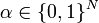
(2) Matrix-Vektor-Multiplikation (keine Matrix-Matrix-Multiplikation, denn die soll ja gerade verifiziert werden)
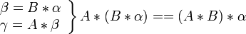
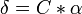
(3) Test der Korrektheit: falls A*B == C, liefert der folgende Test stets true:
return γ==δ
Wir analysieren nun, mit welcher Wahrscheinlichkeit der Algorithmus den Fehler findet, wenn es denn einen gibt, d.h.
- Wahrscheinlichkeit p, dass Freivalds Algorithmus den Fehler findet
oder
- Wahrscheinlichkeit q = 1 - p, dass Freivalds Algorithmus den Fehler nicht findet.
Wir schätzen diese Wahrscheinlichkeit ab für den einfachen Fall N=2. Wir definieren:
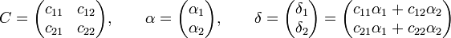
Fallunterscheidung:
Fall 1: C enthält genau 1 Fehler, z.B.
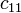
hat falschen Wert- Der Fehler wird gefunden, wenn
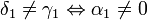
. Da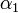
eine Zufallszahl aus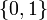
ist, folgt daraus, dass p = q =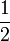
Fall 2: C enthält 2 Fehler
- (a) in verschiedenen Zeilen und Spalten, z.B. und
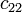
. Es gilt: Der Fehler in wird gefunden, wenn . Unabhängig davon wird der Fehler in gefunden, wenn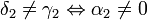
. Da und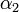
statistisch unabhängig sind, ist die Wahrscheinlichkeit für jedes dieser Ereignisse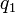
bzw.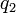
jeweils , und die Gesamtwahrscheinlichkeit q, dass keiner der beiden Fehler gefunden wird, ist deren Produkt: q =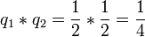
.
- (b) in verschiedenen Zeilen, gleichen Spalten, z.B. und
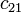
. Es gilt: Der Fehler in wird gefunden, wenn . Das gleiche gilt für den Fehler in . Die Wahrscheinlichkeit q, dass keiner der beiden Fehler gefunden wird, ist demzufolge: q = .
- (c) in der gleichen Zeile, z.B. und
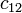
. Es gilt: Der Fehler wird gefunden, wenn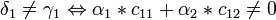
. Hier treten nun zwei ungünstige Fälle auf:- 1) Der Fehler wird u.a. dann nicht gefunden, wenn
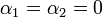
. Die Wahrscheinlichkeit dafür ist wieder q=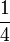
- 2)
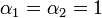
(dies geschieht ebenfalls mit Wahrscheinlichkeit ), aber die Werte und sind "zufälligerweise" so falsch, dass sich die Fehler gegenseitig aufheben. Die Wahrscheinlichkeit, dass beide Bedingungen gelten, ist auf jeden Fall q =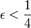
.
- 1) Der Fehler wird u.a. dann nicht gefunden, wenn
Analog behandelt man die Fälle, dass C drei oder vier Fehler enthält. Fasst man die Fälle zusammen, ergibt sich, dass die Wahrscheinlichkeit, einen vorhandenen Fehler nicht zu entdecken, sicher kleiner als ist. Dies gilt auch allgemein:
- Satz
- Die Wahrscheinlichkeit, dass Freivalds Algorithmus einen vorhandenen Fehler nicht findet, ist q < . Wir haben diesen Satz oben für N=2 bewiesen, ein vollständiger Beweis findet sich in der Wikipedia.
- Folgerung
- Lässt man Freivalds Algorithmus mit verschiedenen
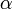
k-mal laufen, gilt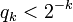
für die Wahrscheinlichkeit, dass keiner der k Durchläufe einen vorhandenen Fehler findet. Diese Wahrscheinlichkeit konvergiert sehr schnell gegen 0. Das heißt, der Algorithmus findet mit beliebig hoher Wahrscheinlichkeit ein Gegenbeispiel zu H (falls es eins gibt), wenn man ihn nur genügend oft mit jeweils anderen Zufallszahlen wiederholt. Daraus folgt, dass Testen ein effektives Fehlersuchverfahren sein kann -- die oben erwähnte Einschränkung von Dijktra trifft zwar zu, aber Tests, die mit so hoher Wahrscheinlichkeit funktionieren, sind für die Praxis meistens vollkommen ausreichend.
Vergleich formaler Korrektheitsbeweis und Testen
Nachdem nun die formalen Methoden sowie der Software-Test vorgestellt worden sind, ist nun die Frage aufzugreifen, welcher der beiden Vorgänge der bessere ist. Allgemein gilt:
- randomisierte Algorithmen
- sind schnell und einfach:
- da die Operationen einfach sind und wenig Zeit kosten
- des öfteren eine Auswahl vorgenommen wird ohne die Gesamtmenge näher zu betrachten
- die Auswahl selbst aufgrund einfacher Kriterien (bspw. zufällige Auswahl) erfolgt
- können Lösungen approximieren und liefern gute approximative Lösungen
- formaler Korrektheitsbeweis mit deterministischen Algorithmen (siehe auch [3])
- bei jedem Aufruf des Beweisers werden immer die selben Schritte durchlaufen
- keine Zufallswerte
- komplexer Aufbau
- oft sehr lange Laufzeit, z.B. mehrere Tage oder gar Monate
Für die formalen Methoden spricht, dass man mit ihnen im Prinzip beweisen kann, dass H nun entweder tatsächlich falsch oder richtig ist. Die formalen Beweise bei realen Problemen sind allerdings so kompliziert, dass sie ebenfalls mit Computerhilfe erbracht werden müssen. Dadurch liegt auch hier keine 100%-ige Korrektheitsgarantie vor: Auch formale Methoden können zum falschen Ergebnis kommen, z.B. durch Hardwarefehler, Compilerbugs, oder unvorhergesehenes Umkippen von Bits (z.B. durch kosmische Strahlung -- diese Gefahr ist im Weltall sehr ernst zu nehmen). Die Möglichkeit von Hardwarefehlern wirkt sich auf die formalen Methoden wesentlich stärker aus, weil diese typischerweise wesentlich längere Laufzeiten haben als entsprechende Testalgorithmen. Es kann deshalb durchaus vorkommen, dass Tests eine höhere Erfolgswahrscheinlichkeit haben als ein formaler Beweis, wie die folgende Beispielrechnung zeigt. Wir nehmen an, dass die Hardware eine "Halbwertszeit" von 50 Millionen Sekunden hat, d.h. ein Hardwarefehler tritt im Durchschnitt etwa alle 20 Monate auf. Dann ist die Wahrscheinlichkeit, dass ein deterministischer Algorithmus nicht zum Ergebnis (oder zum falschen Ergebnis) kommt:
-
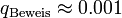
, falls der Beweisalgorithmus 1 Tag benötigt, -
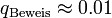
, falls der Beweisalgorithmus 1 Woche benötigt, -
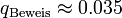
, falls der Beweisalgorithmus 1 Monat benötigt.
Zum Vergleich nehmen wir an, dass der entsprechende Softwaretest einmal pro Sekunde ausgeführt werden kann, und dass jeder Durchlauf den Fehler mit einer Wahrscheinlichkeit von nicht findet. Unter gleichzeitiger Berücksichtigung der Wahrscheinlichkeit von Hardwarefehlern gilt dann
-
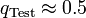
, falls der Test 1-mal wiederholt wird, -
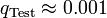
, falls der Test 10-mal wiederholt wird, -
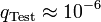
, falls der Test 100-mal wiederholt wird.
Mit anderen Worten: hier ist das Testen vorzuziehen, weil es unter realistischen Bedingungen eine höhere Erfolgswahrscheinlichkeit hat als der formale Beweis. Leider gibt es bisher keine Theorie, mit deren Hilfe man für ein gegebenes Problem systematisch Tests konstruieren kann, deren Misserfolgswahrscheinlichkeit bei wiederholter Anwendung garantiert so schnell gegen Null konvergiert wie die des Freivalds Algorithmus. Dies ist ein offenes Problem der Informatik.
Anwendung des Softwaretestverfahren
Beispiel an Python-Code
Man betrachte die Aufgabe, aus einer Zahl x die Wurzel zu ziehen. Dies kann man erreichen, indem man mit Hilfe des Newtonschen Iterationsverfahrens eine Nullstelle des Polynoms
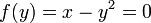
sucht. Ist eine Näherungslösung
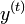
bekannt, erhält man eine bessere Näherung durch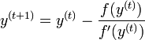
.
Mit
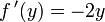
wird das zu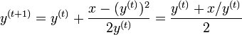
.
Im Spezialfall des Wurzelziehens war diese Newton-Iteration übrigens bereits im Altertum als Babylonische Methode bekannt. Man kann dieselbe durch das folgende (allerdings noch nicht korrekte) Pythonprogramm realisieren:
1 def sqrt(x):
2 if (x<0):
3 raise ValueError("sqrt of negative number")
4 y = x / 2
5 while y*y != x:
6 y =(y + x/y) / 2
7 return y:
Für den oben aufgeführten Pythoncode können Tests mit Hilfe des Python-Moduls "unittest" geschrieben werden (siehe auch Übungsaufgaben). Wir erklären hier die wichtigsten Befehle aus diesem Modul. Wir implementieren eine Testfunktionen (diese muss, wie im Python-Handbuch beschrieben, Methode einer Testklasse sein).
class SqrtTest(unittest.TestCase):
def testsqrt(self):
...
Zunächst muss man prüfen, ob die Vorbedingung korrekt getestet wird, d.h. ob bei einer negativen Zahl x eine Exception ausgelöst wird; dafür benötigt man
self.assertRaises(ValueError, sqrt, -1)
Sollte keine Exception vom Type ValueError ausgelöst werden, dann würde der Test hier einen Fehler signalisieren. Dieser Test funktioniert aber.
Weiter testen wir einige Beispiele, deren Wurzel wir kennen:
self.assertEqual(sqrt(9),3)
Wäre hier das Ergebnis ungleich 3, würde ebenfalls ein Fehler signalisiert, aber es funktioniert in unserem Falle. Der Test
self.assertEqual(sqrt(1),1)
schlägt jedoch mit ZeroDivisionError fehl! Wir sehen, dass in Zeile 4 eine Ganzzahldivision durchgeführt wird, deren Ergebnis stets abgerundet wird, was hier zu y = 0 und damit zum Fehler in Zeile 6 führt. Wieso hat dann aber der erste Test sqrt(9) == 3 funktioniert? Hier gilt x / 2 == 4 und x / y == 2 (jeweils nach Abrunden), und der Mittelwert der beiden Schätzungen ist gerade y == 3, also zufällig das richtige Ergebnis. Allgemein sehen wir jedoch, dass es nicht korrekt ist, mit ganzen Zahlen zu rechnen. Wir müssen also den Input zunächst in einen Gleitkommawert umwandeln:
1 def sqrt(x):
1a x = float(x)
2 if (x<0):
3 raise ValueError("sqrt of negative number")
4 y = x / 2
5 while y*y != x:
6 y =(y + x/y) / 2
7 return y:
Jetzt funktionieren die vorhandenen Tests, aber bei anderen Zahlen (z.B. x = 1.21) läuft das Programm in eine Endlosschleife. Dies liegt daran, dass durch die beschränkte Genauigkeit der Gleitkomma-Darstellung selten exakte Gleichheit in der while-Bedingung erreicht wird. Man darf nicht auf Gleichheit prüfen, sondern muss den relativen Fehler beschränken:
1 def sqrt(x):
1a x = float(x)
2 if (x<0):
3 raise ValueError("sqrt of negative number")
4 y = x / 2
5 while abs(1.0 - x / y**2) > 1e-15: # check for relative difference
6 y =(y + x/y) / 2
7 return y:
Jetzt terminiert das Programm, aber der Test
self.assertEqual(sqrt(1.21)**2, 1.21) # schlägt fehl
schlägt wegen der beschränkten Genauigkeit der Gleitkommadarstellung fehl. Man umgeht dieses Problem, indem man im Test selbst nur näherungsweise Gleichheit fordert, z.B. auf 15 Dezimalstellen genau (bei 16 Dezimalen würde es nicht mehr funktionieren):
self.assertAlmostEqual(sqrt(1.21)**2, 1.21, 15)
Wenden wir jetzt das Prinzip der Condition Coverage an (siehe unten), sehen wir, dass die while-Bedingung bei allen bisherigen Tests zunächst mindestens einmal true gewesen ist. Ein weiterer sinnvoller Tests ist deshalb einer, der diese Bedingung sofort false macht. Dies trifft z.B. bei x == 4 zu, weil y = x / 2 hier gerade die korrekte Wurzel liefert. Wir fügen deshalb den Test
self.assertEqual(sqrt(4), 2)
hinzu, der erfolgreich verläuft. Das Prinzip der Domänen-Zerlegung (siehe unten) führt uns weiter dazu, die Wurzel aus Null als sinnvollen Test zu betrachten, weil die Null am Rand des erlaubten Wertebereichs liegt. Der Test
self.assertEqual(sqrt(0), 0) # schlägt fehl
schlägt in der Tat mit einem ZeroDivisionError fehl: In der Abfrage der while-Bedingung wird jetzt durch y == 0 geteilt. Wir können diesen Fehler beheben, indem wir die Division aus der Bedingung eliminieren:
1 def sqrt(x):
1a x = float(x)
2 if (x<0):
3 raise ValueError("sqrt of negative number")
4 y = x / 2
5 while abs(y**2 - x) > 1e-15*x: # check for relative difference without division
6 y =(y + x/y) / 2
7 return y:
Damit ist auch dieses Problem behoben. Wir sehen also, wie das systematische Testen uns dabei hilft, Fehler im Programm zu finden und zu eliminieren. Eine ausführbare Version dieses Beispiels finden Sie im File SquareRootDebugging.py.
Definition guter Tests
Wir haben gezeigt, dass Testen eine effektive Methode ist, um Fehler in Algorithmen zu finden. Allerdings gilt das nur, wenn Tests und Testdaten geschickt gewählt werden. Wir zeigen bewährte Methoden dafür.
Häufige Fehler
Einige Fehlerklassen treten sehr häufig auf und sollten deshalb beim Testen besondere Aufmerksamkeit genießen:
- Off-by-One
- Dieser Fehler bezeichnet den Fall, dass eine Berechnung oder Bedingung um Eins neben dem korrekten Wert liegt. Dies passiert besonders bei Schleifenindizes. Man schreibt beispielsweise if i < j: wenn if i <= j: richtig gewesen wäre, oder a[i] = a[i+1] wenn a[i-1] = a[i] gemeint war. Die beste Methode um solche Fehler zu finden ist das manuelle Nachvollziehen des Algorithmus auf Papier für kleine Eingaben. Wenn die Schleife, die den Fehler enthält, beispielsweise nur bis zum Index 3 geht, erkennt man den off-by-one-Error meistens sofort, weil offensichtlich auf das falsche Element zugegriffen oder die Schleife zu früh abgebrochen wird.
- Integer-Überlauf
- In vielen Sprachen (z.B. C und C++) sind die Integer-Datentypen so definiert, dass die Berechnung auf die kleinstmöglichen Zahl zurückspringt, wenn man zur größtmöglichen Zahl eins addiert (zyklisches Verhalten). Im Falle eines 8-bit Intergertyps gilt z.B.
uint8 i = 255; // größtmögliche 8-bit Zahl i += 1; assert(i == 0); // zyklisches Verhalten
- und entsprechend:
uint8 i = 0; i -= 1; assert(i == 255);
- Solche Fehler äußern sich typischerweise, wenn man versucht, viele kleine Zahlen zu addieren. Dieses Problem kann allerdings in Python nicht auftreten, weil Python automatisch zum Type long (für beliebig große Zahlen) wechselt, wenn die Werte zu groß werden.
- Float-Überlauf
- Ein ähnlicher Fehler kann auch bei Gleitkommazahlen auftreten, wenn man zur größten exakt darstellbaren ganzen Zahl eins addiert. Die Grenze hängt hier von der Länge der Mantisse ab. Für 32-bit Gleitkommazahlen (23 bit Mantisse) gilt beispielsweise:
float32 f = pow(2.0, 24); // dies ist die größte ganze Zahl, die float32 exakt darstellen kann f += 1.0; assert(f == pow(2.0, 24));
- Im Unterschied zum Integerverhalten hat die Addition hier gar keinen Effekt. Bei 64-bit Gleitkommazahlen tritt der Fehler entsprechend bei pow(2.0, 53) auf.
- Loss-of-Precision
- Dieser Fehler besagt, dass Gleitkommazahlen unter bestimmten Bedingungen ihre Genauigkeit verlieren und dann ungenaue oder sogar unsinnige Ergenisse herauskommen. Dies passiert beispielsweise, wenn man fast gleich große Zahlen voneinander subtrahiert. Dann sind die höherwertigen Bits der Eingaben gleich und löschen sich bei der Subtraktion aus, so dass das Ergebnis nur noch sehr wenige gültige Bits hat und somit sehr ungenau ist. Bei 6-stelliger Dezimaldarstellung wäre z.B. 100.003 - 100.002 = 0.001, und das Ergebnis hat nur noch eine gültige Dezimalstelle. Dies ist ungünstig, weil die Eingaben ja nur gerundete Darstellungen der wahren Werte sind. Mit 12-stelliger Arithmetik hätte man vielleicht die Zahlen 100.002634611 - 100.002456354 = 0.000178257 erhalten, und das ursprüngliche Resultat 0.001 ist mehr als 5-mal zu groß. In der Praxis beobachtet man dieses Problem z.B. beim Lösen von quadratischen Gleichungen.
- Ein verwandtes Problem tritt auf, wenn das exakte Ergebniss gleich Null sein sollte. Durch die begrenzte Genauigkeit der Gleitkommaoperationen kommen dann häufig von Null verschiedene kleine Zahlen heraus. Beispielsweise erhält man unter Python sin(pi) = 1.2246467991473532e-16, obwohl das Ergebnis Null sein sollte. Daraus folgt, dass man Gleitkommazahlen nicht zuverlässig auf Gleichheit testen kann, weil der Test f1 == f2 equivalent zum Test (f1 - f2) == 0.0 ist und meistens fehlschlägt, auch wenn die Zahlen theoretisch gleich sein müssten.
- Man vermeidet derartige Probleme durch geschicktes algebraisches Umformen der Formeln und durch das Einbauen geeigneter Fehlertoleranzen (z.B. testet man statt auf Gleichheit auf den Ausdruck abs(f1 -f2) <= 3e-16, siehe das Beispiel zum sqrt()-Algorithmus oben).
- Randwertfehler
- Wenn ein Algorithmus verschiedene Eingabedomänen hat, für die er sich prinzipiell anders verhält (der Algorithmus für die Quadratwurzel berechnet z.B. das Ergebnis für nicht-negative Eingaben, aber signalisiert einen Fehler für negative Eingaben), dann treten Bugs besonders gern an der Domänengrenze auf. Bei der Wurzel wäre das der Randwert 0, das heisst sqrt(0) verhält sich anders als erwartet (z.B. könnte es einen ValueError auslösen, weil der Test if x < 0.0: fälschlicherweise als if x <= 0.0: geschrieben wurde, oder es passiert eine Division durch Null, weil der Spezialfall nicht richtig abgefangen wurde - siehe das tt>sqrt()</tt>-Beispiel oben). Gute Testprogramme enthalten immer auch Tests für die Randwerte.
Generieren von Referenzdaten
Wie immer man die Tests definiert hat, muss man am Ende die Ausgabe des Algorithmus mit dem korrekten Ergebnis vergleichen. Man bezeichnet ein bekanntes korrektes Ergebnis als Referenz-Ergebnis. Dieses muss man aber erst einmal kennen, was sich mitunter als schwierig erweist. Folgende Verfahren haben sich als zweckmäßig erwiesen:
- Bei bestimmten Eingaben ist das Ergebnis für den Menschen einfach zu bestimmen, für den Algorithmus ist diese Eingabe aber ebenso schwierig wie jede andere. Dies gilt zum Beispiel für die Quadratzahlen im obigen Beispiel: der Algorithmus kennt keine Quadratzahlen und behandelt sie wie jede andere reelle Zahl. Deshalb eignen sich die Quadratzahlen zum Testen. Auch beim Sortieren kleiner Listen kann die korrekte Sortierung leicht bestimmt und als Referenz-Ergebnis abgespeichert werden. Der Test vergleicht dann einfach die Ausgabe des Sortieralgorithmus mit dem Referenz-Ergebnis.
- Oft kann man das korrekte Ergenis mit einem alternativen Verfahren berechnen. Dies gilt insbesondere, wenn man einen effizienten, aber komplizierten Algorithmus testen will. Dann berechnet man die Referenz-Ergebnisse mit einem langsamen, aber einfachen Verfahren. Dies ist möglich, weil man die Referenz-Ergebnisse ja abspeichern kann und der langsame Algorithmus daher nur wenige Male benutzt werden muss. Beispielsweise kann man einen komplizierten Sortieralgorithmus (Quicksort) mit Hilfe von selection sort testen.
- In vielen Fällen steht ein alternatives Programm zur Verfügung, z.B. eine ältere Version des zu testenden Programms, oder ein kommerzielles Programm (bzw. eine Demoversion), das dasselbe Problem löst, aber im aktuellen Kontext nicht verwendet werden kann (weil es z.B. zu teuer ist, oder nur auf einem Mac läuft). Diese Methode bietet sich auch an, wenn man einen Algorithmus aus einer Programmiersprache in eine andere portieren muss.
- Manchmal kann das korrekte Ergebnis nicht direkt angegeben werden, aber man kennt bestimmte Eigenschaften. Beim Sortieren kann man z.B. testen, dass kein Element des sortierten Arrays größer ist als das darauffolgende. Man testet also die Nachbedingungen. Eine abgeschwächte Versionen dieser Methode wird für randomisierte Algorithmen verwendet: Ist die Wahrscheinlichkeitsverteilung der Testeingaben bekannt, kann man die Wahrscheinlichkeitsverteilung der Ergebnisse, oder zumindest wichtige Eigenschaften wie z.B. den Mittelwert, mathematisch vorhersagen. Der Test ermittelt dann, ob die Ausgaben über viele Durchläufe des Algorithmus diese statistischen Eigenschaften aufweisen.
Arten von Tests
Man unterscheidet 3 grundlegende Arten von Tests:
- Black-box Tests [4]
- Hier ist dem Tester nur die Spezifikation, aber nicht die Implementation des Algorithmus bekannt. Alle Tests sowie die Eingaben und Referenz-Ergebnisse müssen aus der Spezifikation abgeleitet werden. Die automatisierte Generierung guter Tests aus der Spezifikation ist ein aktives Forschungsgebiet.
- Gray-box Tests (auch Glass-box Tests) [5]
- Hier kennt der Tester auch die Implementation und kann dadurch Tests entwerfen, die für diese spezielle Implementation besonders aussagekräftig sind. Es besteht allerdings die Gefahr, dass der Tester nicht mehr unvoreingenommen an das Testproblem herangeht, und Zustände, die seiner Meinung nach gar nicht vorkommen können, auch nicht testet (erst später stellt sich heraus, dass diese Zustände doch vorkommen).
- White-box Tests [6]
- Hier kann der Tester die Implementation sogar in geeigneter Weise verändern, z.B.
- explizite Tests für Vor- und Nachbedingungen ("Assertions") einbauen. Dies bietet sich insbesondere in der alpha- und beta-Testphase eines Programms an, um Fehler schnell zu lokalisieren. Auch die unter Windows bekannte Dialogbox "Diesen Fehler bitte auch an Microsoft melden" wird durch solche eingebauten Assertions ausgelöst, wenn das Programm in einen illegalen Zustand geraten ist und abgebrochen werden muss.
- zusätzlichen Code einbauen, der feststellt, ob alle Teile des Programms auch tatsächlich getestet wurden ("code coverage instrumentation"). Dieser Code gibt nach dem Testen z.B. aus, welche Programmzeilen von keinem existierenden Test aufgerufen worden sind. Wenn der ausgeführte Code sehr stark von den Daten abhängt (z.B. bei interaktiven Programmen), kann es sehr schwierig sein, die coverage auf andere Weise festzustellen.
- absichtlich Bugs einbauen (die automatisch wieder abgeschaltet werden, wenn das Testen vorbei ist). Durch diese "fault injection" kann man herausfinden, ob die Tests mächtig genug sind, vorhandene Bugs zu finden.
Prinzipien für die Generierung von Testdaten
- Prinzip der Regressionstests ("Regression testing")
- Häufig werden Tests während der Programmentwicklung verwendet, um einen Algorithmus zu debuggen. Sobald der Algorithmus aber funktioniert werden die Tests gelöscht, denn sie werden ja jetzt nicht mehr gebraucht. Dies ist ein schwerwiegender Fehler: Jedes erfolgreiche Programm muss früher oder später weiterentwickelt werden (zumindest die Anpassung an eine neue Betriebssystemversion ist ab und zu notwendig). Jede Änderung birgt aber die Gefahr, dass sich neue Bugs in bisher funktionierenden Code einschleichen. Man sollte deshalb alle Tests aufheben und in einer test suite sammeln. Durch diese "regression tests" kann man nach jeder Änderung feststellen, ob die alte Funktionalität noch intakt ist, und gegebenenfalls die letzte Änderung einfach rückgängig machen. Tut man dies nicht, kann die Gefahr von unbeabsichtigten destruktiven Änderungen so groß werden, dass das Programm gar nicht mehr weiterentwickelt werden kann. Dies wird drastisch durch den bekannten Spruch "never change a running program" ausgedrückt.
- Prinzip der äquivalenten Eingaben (Domain Partitioning oder Equivalence Partitioning) [7]
- Für ähnliche Eingaben verhält sich ein Algorithmus normalerweise ähnlich, und es hat keinen Sinn, alle diese Eingaben zu testen. Statt dessen teilt (partitioniert) man die Eingabedomäne in Äquivalenzklassen, die vom Algorithmus im wesentlichen gleich behandelt werden. Im obigen Beispiel der Wurzelberechnung ergeben sich zwei Klassen aus der Spezifikation: die negativen Zahlen (für die die Wurzel undefiniert ist und deshalb ein Fehler signalisiert werden muss) und die nicht-negativen Zahlen. Wenn man auch den Quellcode kennt (gray-box testing), kann man die Eingaben oft feiner unterteilen. Z.B. werden häufig unterschiedliche Algorithmen für kleine und für große Eingaben benutzt. Viele Quicksort-Implementationen verwenden beispielsweise für Arrays mit höchstens vier Elementen ein explizites Sortierverfahren, für Arrays der Länge 5 bis 25 selection sort, und erst für größere Arrays das eigentliche Quicksort. Aus der Einteilung der Eingabedomäne ergeben sich zwei wichtige Regeln für die Wahl der Testdaten:
- Aus jeder Äquivelenzklasse wählt man mindestens einen typischen Vertreter, um das normale Verhalten des Algorithmus in jedem Fall zu testen.
- Aus jeder Äquivelenzklasse wählt man Randwerte, weil gerade bei diesen Werten am häufigsten Fehler gemacht werden. Im obigen Wurzelbeispiel ist der Randwert die Null, die in der Tat in einer Version des Algorithmus zu einem ZeroDivisionError geführt hat. Andere typische Randfehler sind, dass Randelemente dem falschen Algorithmenzweig zugeordnet werden (z.B. wenn bei unserem Wurzelbeispiel die Abfrage am Anfang if x <= 0: statt if x < 0: gewesen wäre), dass Schleifen um einen Index zu spät beginnen oder zu früh abbrechen ("Off-by-one errors"), oder dass ein seltener Randfall gar nicht implementiert ist und einfach zum Absturz führt.
- Prinzip, den Fehler zu reproduzieren (Failure Reproduction)
- Wenn ein Bug gemeldet wird, welches die Tests bisher übersehen haben, fügt man einen Test hinzu, der dieses Bug findet. Im Zusammenhang mit regression tests ist damit sichergestellt, dass dasselbe Bug nicht noch einmal auftreten kann.
- Prinzip der Code Coverage [8]
- Hier stellt man sicher, dass tatsächlich der gesamte Code (oder ein vorher festgelegter hoher Prozentsatz) getestet wurde. Gerade bei komplizierten interaktiven Programmen ist diese "code coverage" mitunter nicht leicht zu erreichen, weil manche Programmteile nur bei sehr seltenen oder obskuren Eingaben ausgeführt werden. Eine minimale code coverage erreicht man allerdings bereits, wenn man in einem black-box-Test die Testdaten nach dem Prinzip der äquivalenten Eingaben auswählt, weil dann aus jeder Äquivalenzklasse mindestens ein Vertreter getestet wird. Im Allgemeinen muss man aber den Quellcode zumindest kennen (gray-box-Test), um geeignete Testdaten für code coverage zu identifizieren. Code coverage kann in verschiednen Graden angestrebt werden
- Function coverage: Jede Funktion eines Programms sollte mindestens einmal aufgerufen werden.
- Statement coverage: Jedes Statement (d.h. im wesentlichen jede Programmzeile) sollte mindestens einmal ausgeführt werden. Im obigen Wurzelbeispiel erfordert dies, dass z.B. mindestens einmal eine negative Zahl getestet wird, um die Exception zu prüfen.
- Condition coverage: Jede Bedingung (explizit in if-Bedingungen, implizit in den Abbruchbedingungen von for- und while-Schleifen) sollte mindestens einmal mit dem Ergebnis True und einmal mit dem Ergebnis False durchlaufen werden. Im Wurzelbeispiel haben wir die Eingabe x = 4 gewählt, damit die while-Schleife auch einmal beim ersten Aufruf sofort False liefert.
- Path coverage: Jeder Programmpfad (d.h. jede Kombination von Wahrheitswerten bei allen Bedingungen) sollte einmal ausgeführt werden. Dies ist im Allgemeinen unerreichbar, weil es unendlich viele, oder zumindest zu viele verschiedene Pfade gibt.
- Die Qualität der Tests steigt, wenn eine hohe Coverage (am besten 100%) erreicht wird, und/oder man eine mächtigere Art von Coverage fordert.
- Prinzip der erschöpfenden Tests
- Wenn ein Algorithmus nur wenige mögliche Eingaben hat, kann man sämtliche Eingaben testen. Bei sehr wichtigen Algorithmen kann das auch dann noch sinnvoll sein, wenn es relativ viele mögliche Eingaben gibt. In den meisten Fällen ist es jedoch zu aufwändig.
- Prinzip der vollständigen Paarung (Pair-wise coverage) [9]
- Wenn ein Algorithmus N Eingabeparameter hat, und jeder Parameter hat Ki mögliche Werte, müssen bei der erschöpfenden Suche K1*...*KN Kombinationen getestet werden. Beschränkt man sich in jedem Parameter auf typische Werte und Randwerte jeder Äquivalenzklasse, kann man Ki zwar drastisch reduzieren, aber das Produkt K1*...*KN wird immer noch sehr groß (bei 4 Parametern und nur 3 möglichen Werten pro Parameter hat man bereits 34=81 mögliche Kombinationen). Sei vij der j-te Wert des Parameters i. Anstatt zu versuchen, alle Kombinationen zu testen, kann man fordern, dass zumindest alle möglichen Paare vij und vmj (i≠m) in mindestens einem Test vorkommen. Gibt es nur zwei Parameter, gewinnt man durch diese Einschränkung natürlich nichts, denn man muss mindestens K1*K2 Tests durchführen. Hat man jedoch 3 Parameter, kann man mit weniger Tests auskommen als zuvor, da jeder Test bis zu drei verschiedene Paarungen abdecken kann (eine für den ersten und zweiten Parameter, eine für den ersten und dritten, eine für den zweiten und dritten). Bei vier Parametern werden sogar sechs Paarungen pro Test abgearbeitet usw. Die Theorie des "experimental design" beschreibt nun, wie man systematisch alle möglichen Paarungen mit möglichst wenigen Tests erzeugt. Es stellt sich heraus, dass man alle Paarungen von 3, 4 oder mehr Parametern oft mit genauso vielen Tests erzeugen kann wie bei 2 Parametern nötig wären. Dazu verwendet man die Methode der Latin Squares. Wir beschreiben diese Methode für den einfachen Fall von 3 möglichen Werten pro Parameter.
- Ein Latin Square der Größe 3 ist eine 3x3 Matrix, deren Einträge die Zahlen 1...3 sind, und zwar so, dass jede Zahl genau einmal in jeder Zeile und Spalte vorkommt (ähnlich wie beim Sudoku). Eine mögliche Matrix ist z.B.
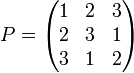
- Man bildet jetzt 9 Kombinationen der Zahlen 1...3, indem man zeilenweise durch die Matrix P geht, und den Zeilenindex (die Nummer der aktuellen Zeile) als erste Zahl, den Spaltenindex als zweite Zahl, und den Eintrag an der aktuallen Position als dritte Zahl verwendet. Man erhält
| Komb. 1 | Komb. 2 | Komb. 3 | Komb. 4 | Komb. 5 | Komb. 6 | Komb. 7 | Komb. 8 | Komb. 9 | |
|---|---|---|---|---|---|---|---|---|---|
| Zahl 1 (Zeilenindex) | 1 | 1 | 1 | 2 | 2 | 2 | 3 | 3 | 3 |
| Zahl 2 (Spaltenindex) | 1 | 2 | 3 | 1 | 2 | 3 | 1 | 2 | 3 |
| Zahl 3 (aktueller Matrixeintrag von P) | 1 | 2 | 3 | 2 | 3 | 1 | 3 | 1 | 2 |
- Diese Tabelle bestimmt, welcher Wert in jedem Test für jeden Parameter verwendet wird. Z.B. wird der erste Test mit v11 (erster Wert des ersten Parameters), v21 (erster Wert des zweiten Parameters), v31 (erster Wert des dritten Parameters) aufgerufen
assertEqual( foo(v11, v21, v31), foo_reference1)
- (reference1 ist das korrekte Referenz-Ergebnis für diese Parameterbelegung). Der letzte Test hat die Parameter v13, v23, v32
assertEqual( foo(v13, v23, v32), foo_reference9)
- Man überzeugt sich leicht, dass diese 9 Tests jede mögliche Paarung genau einmal enthalten. Hat der Algorithmus 4 Parameter, benötigt man einen zweiten Latin Square, der zum ersten orthogonal ist. Zwei Latin Squares P und Q heißen orthogonal, wenn alle Paare cij=(Pij, Qij) eindeutig sind, d.h. es gilt cij≠ckl falls i≠k und j≠l. Ein zu dem obigen P orthogonales Q ist z.B.
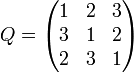
- Jetzt bildet man Kombinationen aus 4 Zahlen, indem man zur obigen Tabelle noch eine vierte Zeile hinzufügt, die die aktuellen Einträge von Q für den jeweiligen Zeilen- und Spaltenindex enthält:
| Komb. 1 | Komb. 2 | Komb. 3 | Komb. 4 | Komb. 5 | Komb. 6 | Komb. 7 | Komb. 8 | Komb. 9 | |
|---|---|---|---|---|---|---|---|---|---|
| Zahl 1 (Zeilenindex) | 1 | 1 | 1 | 2 | 2 | 2 | 3 | 3 | 3 |
| Zahl 2 (Spaltenindex) | 1 | 2 | 3 | 1 | 2 | 3 | 1 | 2 | 3 |
| Zahl 3 (aktueller Matrixeintrag von P) | 1 | 2 | 3 | 2 | 3 | 1 | 3 | 1 | 2 |
| Zahl 4 (aktueller Matrixeintrag von Q) | 1 | 2 | 3 | 3 | 1 | 2 | 2 | 3 | 1 |
- Es sind immer noch nur 9 Tests nötig, um alle Paarungen zu erzeugen. Der erste und letzte Test sind nun:
assertEqual( bar(v11, v21, v31, v41), bar_reference1)
...
assertEqual( bar(v13, v23, v32, v41), bar_reference9)
- Die Methode der Latin Squares funktioniert auch, wenn mehr als 3 Belegungen für jeden Parameter möglich sind, und wenn es mehr als 4 Parameter gibt. Für die Einzelheiten verweisen wir auf die Literatur, z.B. Practical Strategy for Testing Pair-wise Coverage of Network Interfaces, [10]. Empirische Untersuchungen haben ergeben, dass die Methode der vollständigen Paarung oft über 90% der Fehler in einem Programm finden kann.